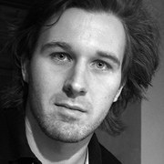

György Kovács

Professional development
2010– Art director at Ulpius-ház Publishing Co.
2008–2010 Graphic designer at Raster Studio
2007–2008 Editor and illustrator of KulturWC Sopron
2006– Freelancing
Education
2003–2008
Master of Industrial Design, Packaging Design Major
University of West Hungary, Institute of Applied Arts, Sopron
2002–2003
Free School of Applied Arts, Kecskemét
1997–2003
Katona József High School, Kecskemét
Exhibitions
2010 The identity of a glover workshop, Kecskemét
2009 Hungarian Design Award
2009 15 years — jubilee exhibition of Free Art School of Kecskemét
2008 Best diplomas exhibition of Hungarian art universities, Ráckeve
2008 Diploma Exhibition, Sopron
2006 AMINDENIT Exhibition, Sopron
2006 Converse Street Art Project, Sopron
2004 National Theater Exhibition — POSZT, Pécs
2001–2005 Exhibition of Free Art School of Mártély, Hódmezővásárhely
Grants, awards, honors
2009 Hungarian Design Award, special prize
2008 MAOE diploma prize
2007 Label Competition at Wunderlich Winery, special prize
2007 University calendar
Skills
Adobe Photoshop, Illustrator, InDesign, CorelDraw, Rhinoceros 3D, freehand drawing, photography
Personal
Born 21 July 1984, Kecskemét, Hungary
Things I like to do: freediving, paragliding, travelling, riding my bicycle, photography, painting, reading